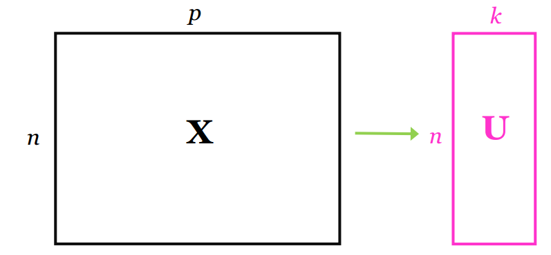
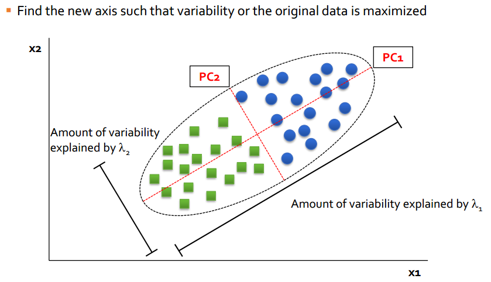

En los tiempos modernos es usual tener gran cantidad de datos y es necesario contar con herramientas para manejarlos.
Ilustración
El análisis de componentes principales es una herramienta para reducir el numero de variables originales por nuevas variables o componentes “incorrelacionadas”.

Ilustración
En el caso de dos variables \(X_1\) y \(X_2\), las componentes principales (\(PC_1\) y \(PC_2\)) corresponden a dos nuevas variables que son independientes (perpendiculares) entre ellas. A continuación una ilustración.

Ilustración
2.1 Details
Suppose \([X_{1}, X_{2}, \dots, X_{p}] = \boldsymbol{X}^\top\) is a set of \(p\) random variables, with mean vector \(\boldsymbol{\mu}\) and variance-covariance matrix \(\boldsymbol{\Sigma}\).
We want to define \(p\) linear combinations of \(\boldsymbol{X}^\top\) that represent the information in \(\boldsymbol{X}^\top\) more parsimoniously.
Specifically, find \(\boldsymbol{a}_{1}, \ldots, \boldsymbol{a}_{p}\) such that \(\boldsymbol{a}_{1}^\top \boldsymbol{X}, \ldots, \boldsymbol{a}_{p}^\top \boldsymbol{X}\) gives the same information as \(\boldsymbol{X}^\top\), but the new random variables, \(\boldsymbol{a}_{1}^\top \boldsymbol{X}, \ldots, \boldsymbol{a}_{p}^\top \boldsymbol{X}\), are ‘nicer’.
Suppose \([X_{1}, X_{2}, \dots, X_{p}] = \boldsymbol{X}^\top\) is a set of \(p\) random variables, with mean vector \(\boldsymbol{\mu}\) and variance-covariance matrix \(\boldsymbol{\Sigma}\).
We want to define \(p\) linear combinations of \(\boldsymbol{X}^\top\) that represent the information in \(\boldsymbol{X}^\top\) more parsimoniously.
Specifically, find \(\boldsymbol{a}_{1}, \ldots, \boldsymbol{a}_{p}\) such that \(\boldsymbol{a}_{1}^\top \boldsymbol{X}, \ldots, \boldsymbol{a}_{p}^\top \boldsymbol{X}\) gives the same information as \(\boldsymbol{X}^\top\), but the new random variables, \(\boldsymbol{a}_{1}^\top \boldsymbol{X}, \ldots, \boldsymbol{a}_{p}^\top \boldsymbol{X}\), are ‘nicer’.
\(Tr(\boldsymbol \Sigma) = \lambda_{1} + \cdots + \lambda_{p}\) = sum of variances for all \(p\) principal components, and for \(X_{1}, \ldots, X_{p}\).
The importance of the \(i^{th}\) principal component is \(\lambda_{i}/Tr(\boldsymbol \Sigma)\).
2.3 Ejemplo
Supongamos que tenemos dos variables cuantitativas \(X_1\) y \(X_2\) como se muestra a continuacion. Queremos encontrar un eje sobre el cual proyectar los puntos de tal manera que las sombras tengan la mayor variabilidad.